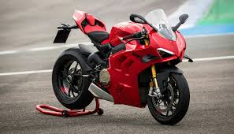
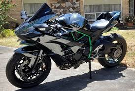

Spor Motosikletler
Yüksek performanslı spor modeller
Popüler Modeller

BMW S 1000 RR
BMW'nin en güçlü spor motosikleti
- Torque: 124 Nm
- Hız: 320 km/s
- Motor: 1103 cc
- Özellik: V4 motor

Ducati Panigale V4
Ducati'nin en güçlü spor motosikleti
- Torque: 124 Nm
- Hız: 320 km/s
- Motor: 1103 cc
- Özellik: V4 motor

Kawasaki Ninja H2
Kawasaki'nin en güçlü spor motosikleti
- Torque: 137 Nm
- Hız: 320 km/s
- Motor: 998 cc
- Özellik: Turbocharged
Spor Motosiklet Bakımı
Motor Yağı
- Synthetic yağ kullanılmalı
- Her 5.000 km'de değiştirilmeli
- Yağ filtresi de değiştirilmeli
Frene Bakımı
- Her 3.000 km'de kontrol edilmeli
- Frene sıvısı her 2 yılda değiştirilmeli
- Frene blokları düzenli kontrole tabi tutulmalı
Yakıt Sistemi
- Filtreler düzenli değiştirilmeli
- Yakıt pompası kontrol edilmeli
- Yakıt sistemi temiz tutulmalı